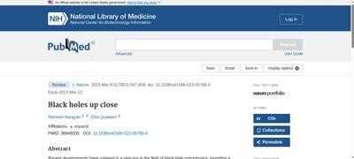
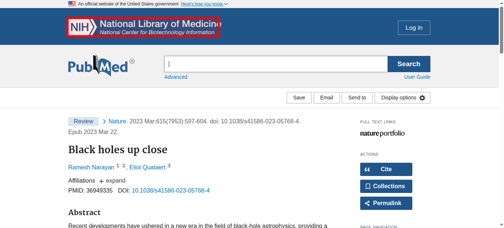
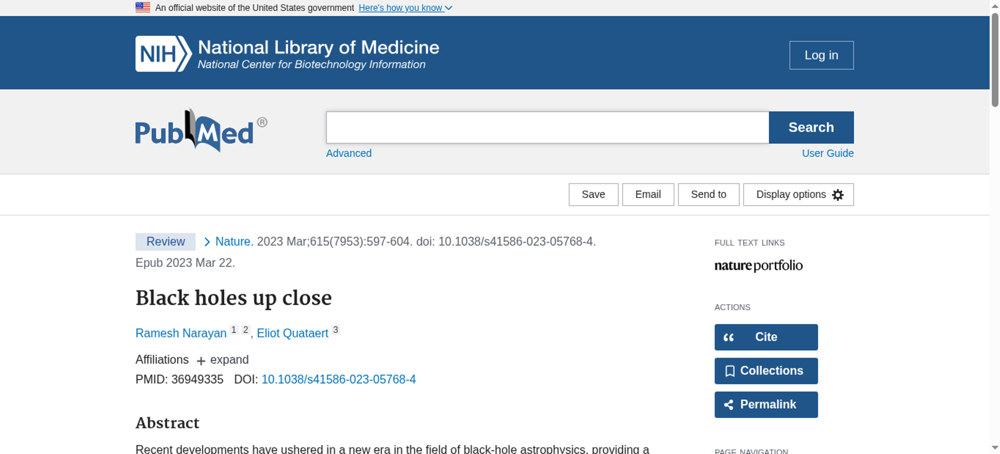

Tested 2025-11-15 02:39:47 using Chrome 141.0.7390.107 (runtime settings).
| Metric | Value |
|---|---|
| Page metrics | |
| Performance score | 77 |
| Total page size | 854.2 KB |
| Requests | 42 |
| Timing metrics | |
| TTFB | 259 ms |
| First Paint | 412 ms |
| Fully Loaded | 1.203 s |
| Google Web Vitals | |
| TTFB | 259 ms |
| First Contentful Paint (FCP) | 412 ms |
| Largest Contentful Paint (LCP) | 412 ms |
| Cumulative Layout Shift (CLS) | 0.00 |
| Visual Metrics | |
| First Visual Change | 400 ms |
| Speed Index | 410 ms |
| Visual Complete 85% | 400 ms |
| Visual Complete 99% | 600 ms |
| Last Visual Change | 600 ms |

Choose HAR:
Use--filmstrip.showAll to show all filmstrips.
 0 s
0 s
0.5 sFirst Contentful Paint 412 msLCP <IMG> 412 msVisual Complete 95% 433 msDOM Content Loaded Time 494 msThe coach helps you find performance problems on your web page using web performance best practice rules. And gives you advice on privacy and best practices. Tested using Coach-core version 8.1.3.

| Title | Advice | Score | |||||||||
|---|---|---|---|---|---|---|---|---|---|---|---|
| Don't scale images in the browser (avoidScalingImages) | The page has 1 image that are scaled more than 100 pixels. It would be better if those images are sent so the browser don't need to scale them. | 90 | |||||||||
| Description: It's easy to scale images in the browser and make sure they look good in different devices, however that is bad for performance! Scaling images in the browser takes extra CPU time and will hurt performance on mobile. And the user will download extra kilobytes (sometimes megabytes) of data that could be avoided. Don't do that, make sure you create multiple version of the same image server-side and serve the appropriate one. | |||||||||||
| Offenders: | |||||||||||
| Avoid using Google Tag Manager. (googleTagManager) | The page is using Google Tag Manager, this is a performance risk since non-tech users can add JavaScript to your page. | 0 | |||||||||
| Description: Google Tag Manager makes it possible for non tech users to add scripts to your page that will downgrade performance. | |||||||||||
| Inline CSS for faster first render (inlineCss) | The page has both inline CSS and CSS requests even though it uses a HTTP/2-ish connection. If you have many users on slow connections, it can be better to only inline the CSS. Run your own tests and check the waterfall graph to see what happens. | 95 | |||||||||
| Description: In the early days of the Internet, inlining CSS was one of the ugliest things you can do. That has changed if you want your page to start rendering fast for your user. Always inline the critical CSS when you use HTTP/1 and HTTP/2 (avoid doing CSS requests that block rendering) and lazy load and cache the rest of the CSS. It is a little more complicated when using HTTP/2. Does your server support HTTP push? Then maybe that can help. Do you have a lot of users on a slow connection and are serving large chunks of HTML? Then it could be better to use the inline technique, becasue some servers always prioritize HTML content over CSS so the user needs to download the HTML first, before the CSS is downloaded. | |||||||||||
| Have a fast largest contentful paint (largestContentfulPaint) | You can add fetchPriority="high" to the image to increase the load priority in Chrome. | 95 | |||||||||
| Description: Largest contentful paint is one of Google Web Vitals and reports the render time of the largest image or text block visible within the viewport, relative to when the page first started loading. To be fast according to Google, it needs to render before 2.5 seconds and results over 4 seconds is poor performance. | |||||||||||
| Avoid Frontend single point of failures (spof) | The page has 4 requests inside of the head that can cause a SPOF (single point of failure). Load them asynchronously or move them outside of the document head. | 90 | |||||||||
| Description: A page can be stopped from loading in the browser if a single JavaScript, CSS, and in some cases a font, couldn't be fetched or is loading really slowly (the white screen of death). That is a scenario you really want to avoid. Never load 3rd-party components synchronously inside of the head tag. | |||||||||||
| Offenders: | |||||||||||
| Avoid extra requests by setting cache headers (cacheHeaders) | The page has 8 requests that are missing a cache time. Configure a cache time so the browser doesn't need to download them every time. It will save 10.2 kB the next access. | 20 | |||||||||
| Description: The easiest way to make your page fast is to avoid doing requests to the server. Setting a cache header on your server response will tell the browser that it doesn't need to download the asset again during the configured cache time! Always try to set a cache time if the content doesn't change for every request. | |||||||||||
| Offenders: | |||||||||||
| Long cache headers is good (cacheHeadersLong) | The page has 15 requests that have a shorter cache time than 30 days (but still a cache time). | 85 | |||||||||
| Description: Setting a cache header is good. Setting a long cache header (at least 30 days) is even better beacause then it will stay long in the browser cache. But what do you do if that asset change? Rename it and the browser will pick up the new version. | |||||||||||
| Offenders: | |||||||||||
| The favicon should be small and cacheable (favicon) | The favicon size is 34.5 kB bytes. That's quite big, can you make it smaller? | 50 | |||||||||
| Description: It is easy to make the favicon big but please avoid doing that, because every browser will then perform an unnecessarily large download. And make sure the cache headers are set for a long time for the favicon. It is easy to miss since it's another content type. | |||||||||||
| Offenders: | |||||||||||
| Total JavaScript size shouldn't be too big (javascriptSize) | The total JavaScript transfer size is 706.8 kB and the uncompressed size is 2.2 MB. This is totally crazy! There is really room for improvement here. | 0 | |||||||||
| Description: A lot of JavaScript often means you are downloading more than you need. How complex is the page and what can the user do on the page? Do you use multiple JavaScript frameworks? | |||||||||||
| Offenders: | |||||||||||
| Avoid using incorrect mime types (mimeTypes) | The page has 1 misconfigured mime type. | 99 | |||||||||
| Description: It's not a great idea to let browsers guess content types (content sniffing), in some cases it can actually be a security risk. | |||||||||||
| Offenders: | |||||||||||
| Make each CSS response small (optimalCssSize) | https://cdn.ncbi.nlm.nih.gov/pubmed/9374a58e-294e-4827-9b66-7d8bcfaf89d4/CACHE/css/output.8af684516550.css size is 19.1 kB (19071) and that is bigger than the limit of 14.5 kB. https://cdn.ncbi.nlm.nih.gov/pubmed/9374a58e-294e-4827-9b66-7d8bcfaf89d4/CACHE/css/output.19211b2d3f1e.css size is 25.6 kB (25649) and that is bigger than the limit of 14.5 kB. Try to make the CSS files fit into 14.5 KB. | 80 | |||||||||
| Description: Make CSS responses small to fit into the magic number TCP window size of 14.5 KB. The browser can then download the CSS faster and that will make the page start rendering earlier. | |||||||||||
Offenders:
| |||||||||||
| Don't use private headers on static content (privateAssets) | The page has 6 requests with private headers. The main page has a private header. It could be right in some cases where the user can be logged in and served specific content. But if your asset is static it should never be private. Make sure that the assets really should be private and only used by one user. Otherwise, make it cacheable for everyone. | 50 | |||||||||
| Description: If you set private headers on content, that means that the content are specific for that user. Static content should be able to be cached and used by everyone. Avoid setting the cache header to private. | |||||||||||
| Offenders: | |||||||||||
| Title | Advice | Score |
|---|---|---|
| Use a good Content-Security-Policy header to make sure you you avoid Cross Site Scripting (XSS) attacks. (contentSecurityPolicyHeader) | Set a Content-Security-Policy header to make sure you are not open for Cross Site Scripting (XSS) attacks. You can start with setting a Content-Security-Policy-Report-Only header, that will only report the violation, not stop the download. | 0 |
| Description: Content Security Policy is delivered via a HTTP response header, and defines approved sources of content that the browser may load. It can be an effective countermeasure to Cross Site Scripting (XSS) attacks and is also widely supported and usually easily deployed. https://scotthelme.co.uk/content-security-policy-an-introduction/. | ||
| Offenders: | ||
| Do not share user data with third parties. (thirdPartyPrivacy) | The page has 38% requests that are 3rd party (16 requests with a size of 466.8 kB). The page also have request to companies that harvest data from users and do not respect users privacy (see https://en.wikipedia.org/wiki/Surveillance_capitalism). The page do 8 tag-manager requests and uses 1 tag-manager tool. The page do 10 survelliance requests and uses 2 survelliance tools. The page do 8 analytics requests and uses 2 analytics tools. | 0 |
| Description: Using third party requests shares user information with that third party. Please avoid that! The project https://github.com/patrickhulce/third-party-web is used to categorize first/third party requests. | ||
| Offenders: | ||
| Page info | |
|---|---|
| Title | Black holes up close - PubMed |
| Width | 1350 |
| Height | 2837 |
| DOM elements | 998 |
| Avg DOM depth | 9 |
| Max DOM depth | 16 |
| Iframes | 0 |
| Script tags | 17 |
| Local storage | 0 b |
| Session storage | 182 B |
| Network Information API | 4g |
| Resource Hints |
|---|
| preconnect |
| https://cdn.ncbi.nlm.nih.gov/ |
| https://www.ncbi.nlm.nih.gov/ |
| https://www.google-analytics.com/ |
Data collected using Wappalyzer version 6.10.54. With updated code from Webappanalyzer 2024-12-27. Use --browsertime.firefox.includeResponseBodies htmlor --browsertime.chrome.includeResponseBodies htmlto help Wappalyzer find more information about technologies used.
| Technology | Confidence | Category |
|---|---|---|
| Envoy | 100 | Reverse proxies |
| Google Cloud | 100 | IaaS |
| Amazon Web Services | 100 | PaaS |
| HSTS | 100 | Security |
| Cloudflare | 100 | CDN |
| Amazon CloudFront | 100 | CDN |
| HTTP/3 | 100 | Miscellaneous |
| Google Cloud Storage | 100 | Miscellaneous |
Data collected using Third Party Web 0.26.2
| Tag-manager |
|---|
| Google Tag Manager |
| Survelliance |
| Google Tag Manager |
| Google Analytics |
| Analytics |
| Google Analytics |
| Qualtrics |
| Visual Metrics | |
|---|---|
| First Visual Change | 400 ms |
| Speed Index | 410 ms |
| Visual Complete 85% | 400 ms |
| Visual Complete 95% | 433 ms |
| Visual Complete 99% | 600 ms |
| Last Visual Change | 600 ms |
| Visual Readiness | 200 ms |
| Navigation Timing | |
|---|---|
| backEndTime | 259 ms |
| domContentLoadedTime | 494 ms |
| domInteractiveTime | 484 ms |
| domainLookupTime | 19 ms |
| frontEndTime | 577 ms |
| pageDownloadTime | 9 ms |
| pageLoadTime | 845 ms |
| redirectionTime | 0 ms |
| serverConnectionTime | 35 ms |
| serverResponseTime | 212 ms |
| Google Web Vitals | |
|---|---|
| Time to first byte (TTFB) | 259 ms |
| First Contentful Paint (FCP) | 412 ms |
| Largest Contentful Paint (LCP) | 412 ms |
| Total Blocking Time (TBT) | 0 ms |
| Extra timings | |
|---|---|
| TTFB | 259 ms |
| First Paint | 412 ms |
| Load Event End | 846 ms |
| Fully loaded | 1.203 s |
When in time the page main content is rendered (collected using the Largest Contentful Paint API). Read more about Largest Contentful Paint.
| Element type | IMG |
| Element/tag | <img src="https://cdn.ncbi.nlm.nih.gov/coreutils/nwds/img/logos/AgencyLogo.svg" alt="NIH NLM Logo"> |
| Render time | 412 ms |
| Element render delay | 50 ms |
| TTFB | 259 ms |
| Resource delay | 8 ms |
| Resource load duration | 95 ms |
| Load time | 376 ms |
| URL | https://cdn.ncbi.nlm...os/AgencyLogo.svg |
| Size (width*height) | 20286 |
| DOM path | |
| header > div > div > div:eq(0) > a > img> header > div > div > div:eq(0) > a > img> | |

The largest contentful paint is highlighted in the image. If no element is highlighted the element was removed before the screenshot or the LCP API couldn't find the element.
The Largest Contentful Paint API highlighted this image as a part of the LCP.

No layout shift detected.
Read more about the Long Animation Frames API here here.
The top 10 longest animation frames entries
| Blocking duration | Work duration | Render duration | PreLayout Duration | Style And Layout Duration |
|---|---|---|---|---|
| 0 ms | 100.9 ms | 32.2 ms | 0 ms | 32.2 ms |
| No availible script information. | ||||
| Blocking duration | Work duration | Render duration | PreLayout Duration | Style And Layout Duration |
|---|---|---|---|---|
| 0 ms | 53.5 ms | 1.9 ms | 1.8 ms | 0.1 ms |
| https://cdn.ncbi.nlm.nih.gov/pubmed/9374a58e-294e-4827-9b66-7d8bcfaf89d4/CACHE/js/output.711d4a8e7750.js | ||||
Invoker: https://cdn.ncbi.nlm.nih.gov/pubmed/9374a58e-294e-4827-9b66-7d8bcfaf89d4/CACHE/js/output.711d4a8e7750.js | ||||
| https://pubmed.ncbi.nlm.nih.gov/36949335/ | ||||
Forced Style And Layout Duration: 4 ms Invoker: https://pubmed.ncbi.nlm.nih.gov/36949335/ | ||||
There are no Server Timings.
There are no custom configured scripts.
There are no custom extra metrics from scripting.
| name | value |
|---|---|
| AudioHandlers | 0 |
| AudioWorkletProcessors | 0 |
| Documents | 45 |
| Frames | 27 |
| JSEventListeners | 251 |
| LayoutObjects | 1029 |
| MediaKeySessions | 0 |
| MediaKeys | 0 |
| Nodes | 3741 |
| Resources | 60 |
| ContextLifecycleStateObservers | 53 |
| V8PerContextDatas | 3 |
| WorkerGlobalScopes | 0 |
| UACSSResources | 0 |
| RTCPeerConnections | 0 |
| ResourceFetchers | 45 |
| AdSubframes | 0 |
| DetachedScriptStates | 2 |
| ArrayBufferContents | 1 |
| LayoutCount | 18 |
| RecalcStyleCount | 43 |
| LayoutDuration | 28 |
| RecalcStyleDuration | 19 |
| DevToolsCommandDuration | 3 |
| ScriptDuration | 198 |
| V8CompileDuration | 0 |
| TaskDuration | 307 |
| TaskOtherDuration | 59 |
| ThreadTime | 0 |
| ProcessTime | 1 |
| JSHeapUsedSize | 11074172 |
| JSHeapTotalSize | 15204352 |
| FirstMeaningfulPaint | 410 |
How the page is built.
| Summary | |
|---|---|
| HTTP version | HTTP/2.0 |
| Total requests | 42 |
| Total domains | 7 |
| Total transfer size | 854.2 KB |
| Total content size | 2.7 MB |
| Responses missing compression | 24 |
| Number of cookies | 2 |
| Third party cookies | 0 |
| Requests per response code | |
|---|---|
| 200 | 40 |
| 204 | 2 |
| Content | Header Size | Transfer Size | Content Size | Requests |
|---|---|---|---|---|
| html | 0 b | 21.3 KB | 102.2 KB | 6 |
| css | 0 b | 51.6 KB | 286.9 KB | 4 |
| javascript | 0 b | 690.2 KB | 2.1 MB | 15 |
| image | 0 b | 9.4 KB | 8.5 KB | 5 |
| font | 0 b | 27.1 KB | 26.4 KB | 1 |
| svg | 0 b | 12.4 KB | 45.3 KB | 4 |
| json | 0 b | 8.5 KB | 90.8 KB | 3 |
| other | 0 b | 0 b | 0 b | 1 |
| plain | 0 b | 0 b | 0 b | 2 |
| favicon | 0 b | 33.7 KB | 33.7 KB | 1 |
| Total | 0 b | 854.2 KB | 2.7 MB | 42 |
| Domain | Total download time | Transfer Size | Content Size | Requests |
|---|---|---|---|---|
| pubmed.ncbi.nlm.nih.gov | 481 ms | 23.3 KB | 108.5 KB | 4 |
| cdn.ncbi.nlm.nih.gov | 1.054 s | 365.7 KB | 1.2 MB | 21 |
| www.googletagmanager.com | 392 ms | 382.8 KB | 1.1 MB | 8 |
| dap.digitalgov.gov | 159 ms | 9.4 KB | 29.0 KB | 1 |
| www.google-analytics.com | 57 ms | N/A | 0 b | 2 |
| zndikywqsjiuwn0q5-nlmenterprise.siteintercept.qualtrics.com | 131 ms | 4.3 KB | 8.6 KB | 1 |
| siteintercept.qualtrics.com | 278 ms | 68.8 KB | 304.5 KB | 5 |
| type | min | median | max |
|---|---|---|---|
| Expires | 0 seconds | 1 hour | 1 year |
| Last modified | -1 day | 1 week | 3 years |
Included requests done after load event end.
| Content | Transfer Size | Requests |
|---|---|---|
| html | 0 b | 0 |
| css | 0 b | 0 |
| javascript | 66.6 KB | 5 |
| image | 1.7 KB | 1 |
| font | 0 b | 0 |
| favicon | 33.7 KB | 1 |
| json | 6.5 KB | 1 |
| Total | 108.5 KB | 8 |
Includes requests done after DOM content loaded.
| Content | Transfer Size | Requests |
|---|---|---|
| html | 255 B | 5 |
| css | 0 b | 0 |
| javascript | 342.8 KB | 8 |
| image | 1.9 KB | 2 |
| font | 0 b | 0 |
| other | 0 b | 1 |
| json | 6.6 KB | 2 |
| plain | 0 b | 2 |
| favicon | 33.7 KB | 1 |
| Total | 385.2 KB | 21 |
Third party requests categorised by Third party web version 0.26.2.
| Category | Requests |
|---|---|
| tag-manager | 8 |
| survelliance | 10 |
| analytics | 8 |
| Category | Number of tools |
|---|---|
| tag-manager | 1 |
| survelliance | 2 |
| analytics | 2 |
Here's a list of domains that didn't match any tool in Third party web. If you are sure they are third party domains, please do a PR to that project. You can also fine tune the list using --firstParty.
| dap.digitalgov.gov |
Calculated using .*nih.* (use --firstParty to configure).
| Content | Header Size | Transfer Size | Content Size | Requests |
|---|---|---|---|---|
| html | 0 b | 21.0 KB | 102.2 KB | 1 |
| css | 0 b | 51.6 KB | 286.9 KB | 4 |
| javascript | 0 b | 231.7 KB | 789.7 KB | 6 |
| image | 0 b | 9.4 KB | 8.5 KB | 5 |
| font | 0 b | 27.1 KB | 26.4 KB | 1 |
| svg | 0 b | 12.4 KB | 45.3 KB | 4 |
| json | 0 b | 2.0 KB | 6.3 KB | 2 |
| other | 0 b | 0 b | 0 b | 1 |
| favicon | 0 b | 33.7 KB | 33.7 KB | 1 |
| Total | N/A | 388.9 KB | 1.3 MB | 25 |
| Content | Header Size | Transfer Size | Content Size | Requests |
|---|---|---|---|---|
| html | 0 b | 255 B | 0 b | 5 |
| css | 0 b | 0 b | 0 b | 0 |
| javascript | 0 b | 458.5 KB | 1.3 MB | 9 |
| image | 0 b | 0 b | 0 b | 0 |
| font | 0 b | 0 b | 0 b | 0 |
| plain | 0 b | 0 b | 0 b | 2 |
| json | 0 b | 6.5 KB | 84.5 KB | 1 |
| Total | N/A | 465.2 KB | 1.4 MB | 17 |

afterPageCompleteCheck.png

layoutShift.png
largestContentfulPaint.png
{kind=link}
{kind=link}
{kind=link}
{kind=link}
{kind=link}
{kind=link}
{kind=link}
{kind=link}
{kind=link}
{kind=link}
{kind=link}
{kind=link}
{kind=link}
{kind=link}
{kind=link}